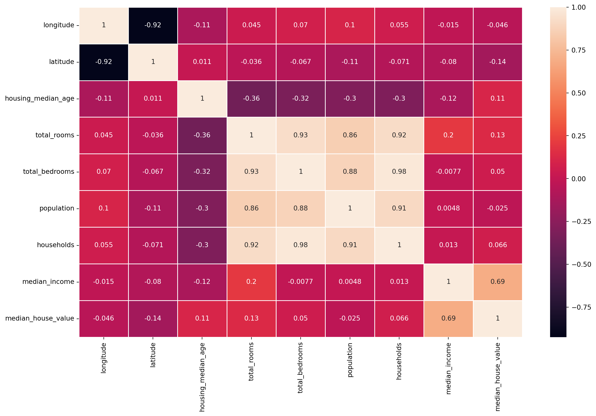
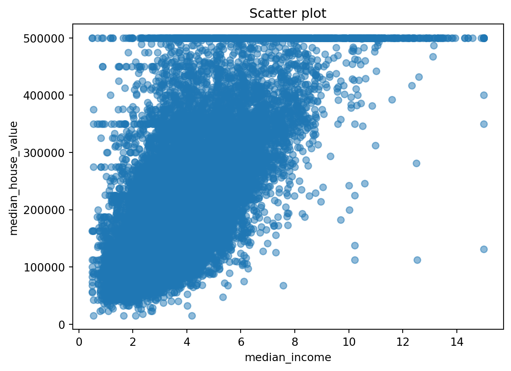
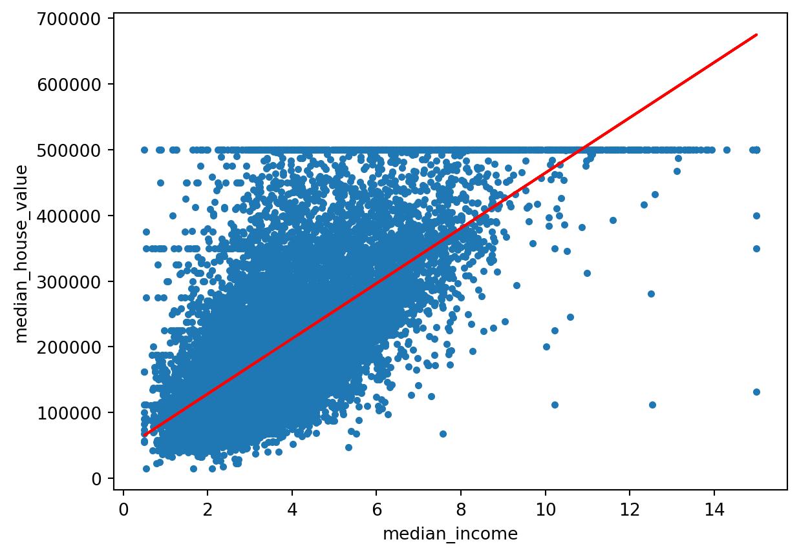
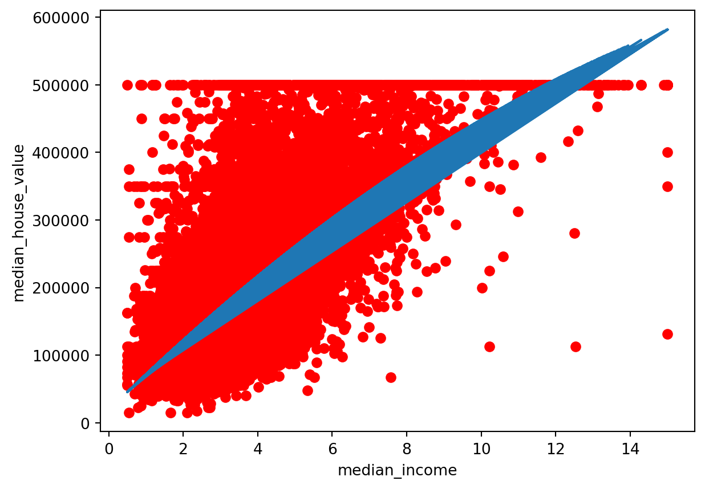

import numpy as np
import pandas as pd
import matplotlib.pyplot as plt
import seaborn as sns
import warnings
warnings.filterwarnings("ignore")
%matplotlib inlineBlog 2 – Linear and Non Linear regression

Since this post doesn’t specify an explicit image, the first image in the post will be used in the listing page of posts.
Import packages
Load the data
data = pd.read_csv("housing.csv")
data.head()| longitude | latitude | housing_median_age | total_rooms | total_bedrooms | population | households | median_income | median_house_value | ocean_proximity | |
|---|---|---|---|---|---|---|---|---|---|---|
| 0 | -122.23 | 37.88 | 41.0 | 880.0 | 129.0 | 322.0 | 126.0 | 8.3252 | 452600.0 | NEAR BAY |
| 1 | -122.22 | 37.86 | 21.0 | 7099.0 | 1106.0 | 2401.0 | 1138.0 | 8.3014 | 358500.0 | NEAR BAY |
| 2 | -122.24 | 37.85 | 52.0 | 1467.0 | 190.0 | 496.0 | 177.0 | 7.2574 | 352100.0 | NEAR BAY |
| 3 | -122.25 | 37.85 | 52.0 | 1274.0 | 235.0 | 558.0 | 219.0 | 5.6431 | 341300.0 | NEAR BAY |
| 4 | -122.25 | 37.85 | 52.0 | 1627.0 | 280.0 | 565.0 | 259.0 | 3.8462 | 342200.0 | NEAR BAY |
The info function provide the information about the dataset . For example:
- Missing values(no missing values in our dataset)
- datatype(9 of them are floats and 1 is categorical)
data.info()<class 'pandas.core.frame.DataFrame'>
RangeIndex: 20640 entries, 0 to 20639
Data columns (total 10 columns):
# Column Non-Null Count Dtype
--- ------ -------------- -----
0 longitude 20640 non-null float64
1 latitude 20640 non-null float64
2 housing_median_age 20640 non-null float64
3 total_rooms 20640 non-null float64
4 total_bedrooms 20433 non-null float64
5 population 20640 non-null float64
6 households 20640 non-null float64
7 median_income 20640 non-null float64
8 median_house_value 20640 non-null float64
9 ocean_proximity 20640 non-null object
dtypes: float64(9), object(1)
memory usage: 1.6+ MBPearson correlation :
plt.subplots(figsize=(15, 9))
data_numeric = data.select_dtypes(include=['float64', 'int64'])
cor = data_numeric.corr()
sns.heatmap(cor, annot=True, linewidths=.5)
plt.show()
If we have to select a single variable for the regression analysis then higher possibility is to pick the most correlated feature with the target variable(median_house_value).
- In our case it is the median_income with correlation coefficent of 0.69
# taking two variables
data = data.drop(["housing_median_age","households","total_bedrooms","longitude","latitude","total_rooms","population","ocean_proximity"], axis=1)
data.head()| median_income | median_house_value | |
|---|---|---|
| 0 | 8.3252 | 452600.0 |
| 1 | 8.3014 | 358500.0 |
| 2 | 7.2574 | 352100.0 |
| 3 | 5.6431 | 341300.0 |
| 4 | 3.8462 | 342200.0 |
Using this scatter plot we can infer that if a person has higher median_income then that person may have more expensive house. There is somewhat positive linear relationship between them.
X = data.drop("median_house_value", axis=1)
y = data["median_house_value"]
plt.scatter(X, y, alpha=0.5)
plt.title('Scatter plot')
plt.xlabel('median_income')
plt.ylabel('median_house_value')
plt.show()
Split the data
from sklearn.model_selection import train_test_split
X_train, X_test, y_train, y_test = train_test_split(X, y, test_size = 0.2, random_state = 0)Model 1:
Linear regression model
from sklearn.linear_model import LinearRegression
from sklearn.metrics import mean_squared_error, r2_score
# Model initialization
regression_model = LinearRegression()
# Fit the data(train the model)
regression_model.fit(X_train, y_train)LinearRegression()In a Jupyter environment, please rerun this cell to show the HTML representation or trust the notebook.
On GitHub, the HTML representation is unable to render, please try loading this page with nbviewer.org.
LinearRegression()
# Predict
y_predicted = regression_model.predict(X_test)
# model evaluation
rmse = np.sqrt(mean_squared_error(y_test, y_predicted))
r2 = r2_score(y_test, y_predicted)# printing values
print('Slope:' ,regression_model.coef_)
print('Intercept:', regression_model.intercept_)
print('Root mean squared error: ', rmse)
print('R2 score: ', r2)Slope: [42032.17769894]
Intercept: 44320.6352276571
Root mean squared error: 84941.05152406936
R2 score: 0.4466846804895944Interpretation:
This simple linear regression with single variable (y = mx+b) has
- Slope of the line(m) : [42032.17769894]
- Intercept (b) : 44320.63
- R2 score: 0.4466 (For R2 score more is better in the range [0,1])
- Root mean squared error: 84941.0515 (Lower is better)
#####The plot of simple linear regression :
# data points
plt.scatter(X_train, y_train, s=10)
plt.xlabel('median_income')
plt.ylabel('median_house_value')
# predicted values
plt.plot(X_test, y_predicted, color='r')
plt.show()
Model 2:
Fitting polynomial Regression model
from sklearn.preprocessing import PolynomialFeatures
poly_reg = PolynomialFeatures(degree=2)
X_poly = poly_reg.fit_transform(X_train)
pol_reg = LinearRegression()
pol_reg.fit(X_poly, y_train)LinearRegression()In a Jupyter environment, please rerun this cell to show the HTML representation or trust the notebook.
On GitHub, the HTML representation is unable to render, please try loading this page with nbviewer.org.
LinearRegression()
def viz_polymonial():
plt.scatter(X_train, y_train, color="red")
plt.plot(X_train, pol_reg.predict(poly_reg.fit_transform(X_train)))
plt.xlabel('median_income')
plt.ylabel('median_house_value')
plt.show()
return
viz_polymonial()
# Predict
X_p = poly_reg.fit_transform(X_test)
y_predicted = pol_reg.predict(X_p)
# model evaluation
rmse = np.sqrt(mean_squared_error(y_test, y_predicted))
r2 = r2_score(y_test, y_predicted)
# printing values
print('Slope:' ,regression_model.coef_)
print('Intercept:', regression_model.intercept_)
print('Root mean squared error: ', rmse)
print('R2 score: ', r2)Slope: [42032.17769894]
Intercept: 44320.6352276571
Root mean squared error: 84699.90676455045
R2 score: 0.44982190770645947Interpretation:
This transformed linear regression with single variable (y = mx+b) has
Slope of the line(m) : 175550.81
Intercept (b) : -129097.46
R2 score: 0.4498 (For R2 score more is better in the range [0,1])
Found R2 score is the best so far. This means that we will keep this ploynomial model with degree 2 as our final and best model(but there is one other thing to consider i.e. simple is better than complex)
Root mean squared error: 84699.9 (Lower is better)
Comparing the Model
- Model 1 has R2 score: 0.4466
- Model 2 has R2 score: 0.44982 After analyzing the R2 score , My final model will be Model 1 as it is simple and has not worse R2 score as compared to the model 3.